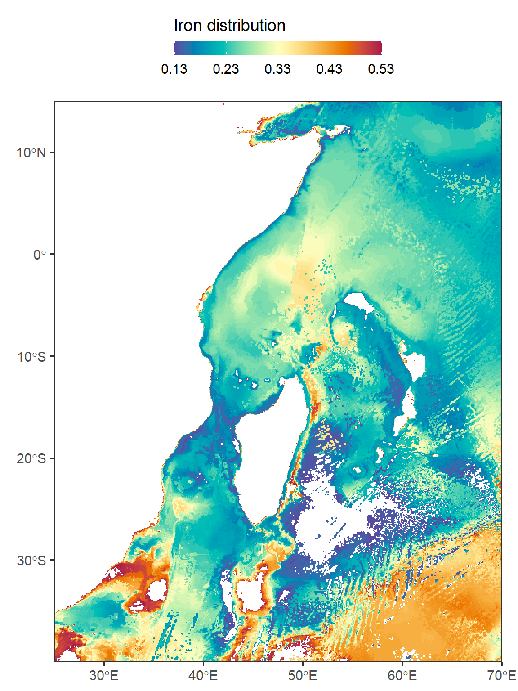

9 Introduction to Raster
9.1 What is a raster?
A raster is basically a matrix or an array, representing a rectangular area on the surface of the earth. To associate the matrix or the array with the particular area it represents, the raster has some additional spatial properties, on top of the non-spatial properties that any ordinary matrix or array has:
-
Non-spatial properties
- Values
- Dimensions (rows, columns, layers)
-
Spatial properties
- Extent
- Coordinate Reference System (CRS)
- (Resolution)
Raster extent is the range of x- and y-axis coordinates that the raster occupies. The Coordinate Reference System (CRS) is the particular system that "associates" the raster coordinates (which are just pairs of x/y values) to geographic locations. Raster resolution is the size of a raster cell, in the x and y directions. The resolution is listed in parentheses because it can be calculated given the extent and the number of rows and columns.
9.2 Commmon Raster file formats
Commonly used raster file formats (Table [5.2] can be divided in two groups. "Simple" raster file formats, such as GeoTIFF, are single-band or multi-band rasters (Figure [5.10] with a geo-referenced extent, as discussed above (Section [5.3.1]. "Complex" raster file formats, such as HDF, contain additional complexity, such as more than three dimensions (Figure [5.11], and/or metadata, such as band names, time stamps, units of measurement, and so on. | | | | |————————————|—————————————————————–|—————————————| | | | Table 5.2: Common raster file formats | | Type | Format | File extension | | "Simple" | GeoTIFF | .tif | | | Erdas Imagine Image | .img | | "Complex" (>3D and/or metadata) | HDF | .hdf, he5, and other | | | NetCDF | .nc |
9.3 Raster with terra
In this section, our focus will be on the terra package, which serves as a replacement for the raster package in R when working with raster-based geospatial data. Over the years, the raster package has been widely used as a primary tool for geospatial data manipulation in R. However, the creators of the raster package have recently introduced the terra package as a more efficient alternative.
terra is a geospatial data processing library in R that provides efficient and scalable tools for working with raster data. It is designed to handle large and complex spatial datasets, allowing for high-performance analysis and processing. The terra package introduces three new classes for working with geospatial data:
SpatRaster: The SpatRaster class is designed for representing raster data in a geospatial context. It provides efficient memory usage compared to the data models used in the raster package. SpatRaster objects store the spatial extent, resolution, and values of a raster dataset. They support various operations and functions for raster data manipulation, analysis, and visualization.
SpatVector: The SpatVector class represents vector-based geospatial data, including points, lines, and polygons, along with their associated attributes. SpatVector objects store the geometries and attribute data of vector features. They support common vector operations such as subsetting, spatial queries, spatial joins, and attribute manipulation.
SpatExtent: The SpatExtent class is used to represent the spatial extent of a geospatial object, such as a SpatRaster or SpatVector. It captures the minimum and maximum coordinates along each dimension (e.g., x, y, and potentially z for 3D data). SpatExtent objects provide methods for comparing extents, calculating overlaps, and extracting subsets of data based on spatial extent.
To get started using the terra package for working with geospatial data and performing various tasks, such as raster preprocessing, install the terra package from the CRAN repository using the following command:
Then, load the package into your R session:
9.4 Reading raster file
To read a raster dataset from an existing file, you can use the rast() function along with the file path and name. For instance, you can read bathymetry data covering the Indian Ocean region from a file provided by NASA.
class : SpatRaster
dimensions : 3181, 2641, 1 (nrow, ncol, nlyr)
resolution : 0.01666667, 0.01666667 (x, y)
extent : 25.99167, 70.00834, -40.00833, 13.00834 (xmin, xmax, ymin, ymax)
coord. ref. : lon/lat WGS 84
source : wioregio-7753.asc
name : wioregio-7753 The spatRaster object in R provides a range of functions to obtain information about the data it contains. Simply calling the object using its variable name will return basic information, but additional functions are available for more specific details. For instance, ncol() returns the number of columns, nrow() returns the number of rows, and ncell() returns the total number of cells in the data.
The nlyr() function returns the number of layers or bands, while res() provides the data’s resolution relative to the map projection’s units. The names assigned to each band can be obtained using the names() function. Finally, inMemory() returns a Boolean value indicating whether the data is stored in memory or RAM. These functions allow for a more detailed understanding of the spatRaster object’s contents and properties.
9.5 Explore raster
In the next section, we will delve into raster processing tasks such as cropping, masking, and merging using the terra package. These operations allow us to manipulate raster data before further analysis. In this section, let us explore the raster dataset we just imported into our session.
The command bathy %>% sf::st_bbox() is used for obtaining the bounding box of the Western Indian Ocean (WIO) region in the bathymetry data. This command utilizes the st_bbox() function from the sf package in R programming language. The output of this command will provide the minimum and maximum values for longitude and latitude that define the rectangular boundary of the WIO region. This information can be useful for a variety of spatial analyses, such as selecting a subset of data within the WIO region or visualizing the extent of the region on a map. Overall, this command provides a convenient and efficient way to obtain the bounding box for the WIO region from the bathymetry data.
To extract a rectangular extent from a larger raster dataset, you can utilize the crop() function in the terra package. This requires specifying the desired extent using the spatExtent object, which is created using the ext() function and defining the xmin, xmax, ymin, and ymax coordinates relative to the map projection.
9.6 Visualizing raster
In addition to the well-known raster package, which is set to retire soon, the R ecosystem offers several new tools for visualizing raster data. Notably, the terra and tidyterra packages have been introduced, significantly enhancing the capabilities and ease of raster visualization. These tools provide advanced features and improved functionalities, making the process of visualizing raster data even better and more accessible. With terra and tidyterra, users can explore and visualize raster datasets more effectively, enabling a seamless and efficient workflow for raster visualization tasks in R.
One notable tool in the R ecosystem for raster visualization is the geom_spatraster() function from the tidyterra package. This function provides a convenient and efficient way to integrate raster data visualization into the grammar of graphics framework provided by the tidyverse.
Code
ggplot()+
tidyterra::geom_spatraster(data = bathy.aoi)+
tidyterra::scale_fill_hypso_tint_c(
palette = "gmt_globe",
labels = scales::label_number(),
breaks = seq(-6000, 6000,3000),
# limits = c(-6000, 6500),
guide = guide_colorbar(
direction = "horizontal",
title = "Bathymetry & altitude (meters)",
title.position = "top",
barwidth = 12, barheight = 0.8
))+
coord_sf(expand = FALSE) +
theme_bw(base_size = 14) +
theme(legend.position = "top")
By leveraging geom_spatraster(), we can easily create aesthetically pleasing and customizable plots that represent raster data in a visually appealing manner. This function offers various options for styling and mapping raster values to visual properties, such as color gradients or contours.
Code
5% 95%
1.3e-05 6.8e-05 Code
ggplot() +
tidyterra::geom_spatraster(data = iron.wio)+
scale_fill_gradientn(colours = hcl.colors(n = 120, palette = "Spectral", rev = TRUE),
guide = guide_colorbar(
direction = "horizontal",
title = "Iron distribution",
title.position = "top",
barwidth = 12, barheight = 0.8
),
limits = c(0.000013, 0.000068), na.value = "white",
breaks = seq(0.000013, 0.000068, length.out = 5), label = seq(0.13,0.6,0.1))+
theme_bw(base_size = 14)+
coord_sf(expand = FALSE)+
theme_bw(base_size = 14) +
theme(legend.position = "top")
Additionally, you can crop a raster relative to the rectangular extent or bounding box of another geospatial layer by using the extent of that layer in the crop operation. In the provided code block, an example is shown where the spatial extent of a watershed boundary is used for cropping. It is worth noting that plotting spatVector objects with the tmap package may not be possible, so the data is also read in as an sf object using the sf package for visualization purposes.
Code
ggplot()+
tidyterra::geom_spatraster(data = bathy.aoi)+
tidyterra::geom_spatraster_contour(data = bathy.aoi, breaks = -200)+
tidyterra::scale_fill_hypso_tint_c(
palette = "gmt_globe",
labels = scales::label_number(),
breaks = seq(-6000, 6000,3000),
# limits = c(-6000, 6500),
guide = guide_colorbar(
direction = "horizontal",
title = "Bathymetry & altitude (meters)",
title.position = "top",
barwidth = 12, barheight = 0.8
))+
coord_sf(expand = FALSE) +
theme_bw(base_size = 14) +
theme(legend.position = "top")